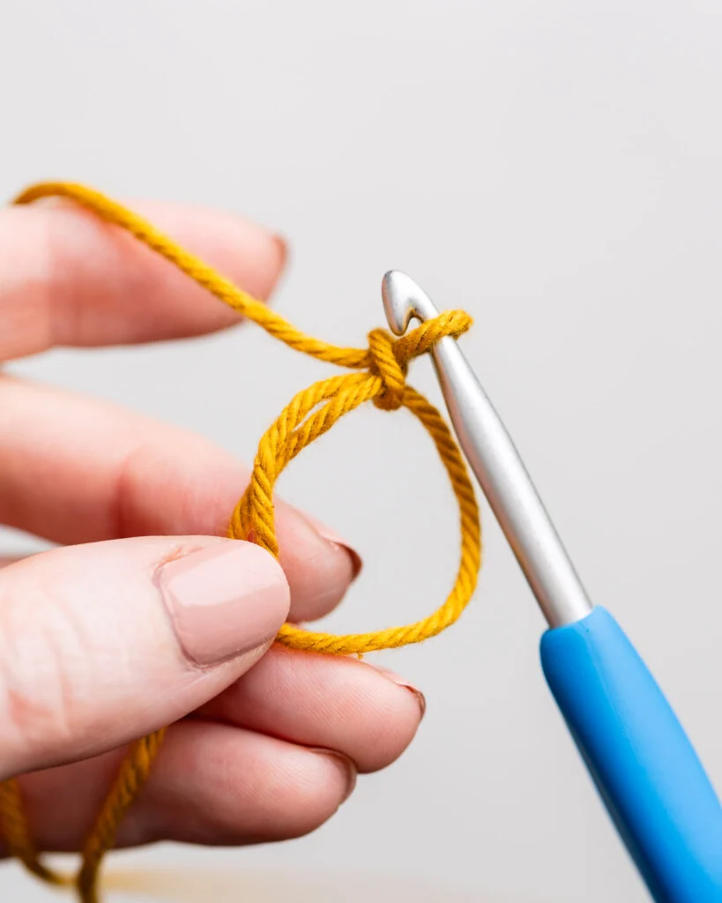
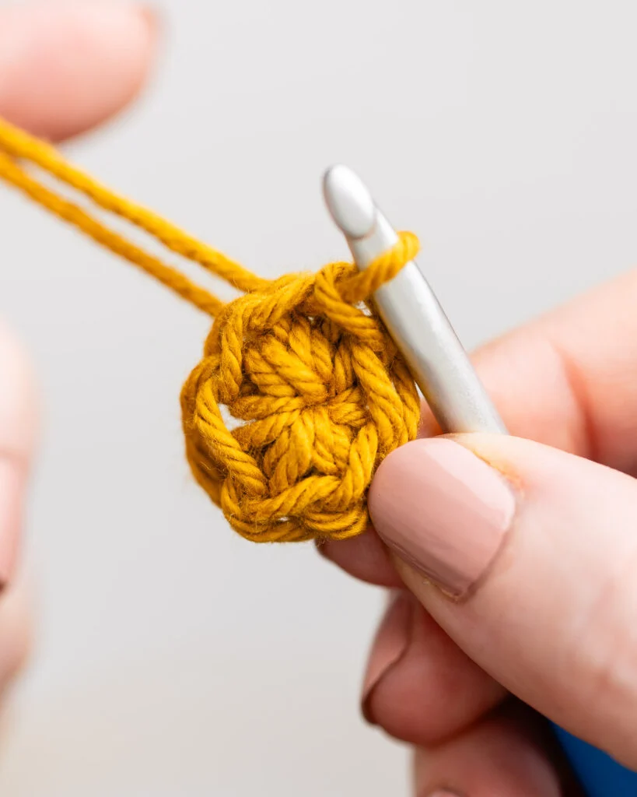
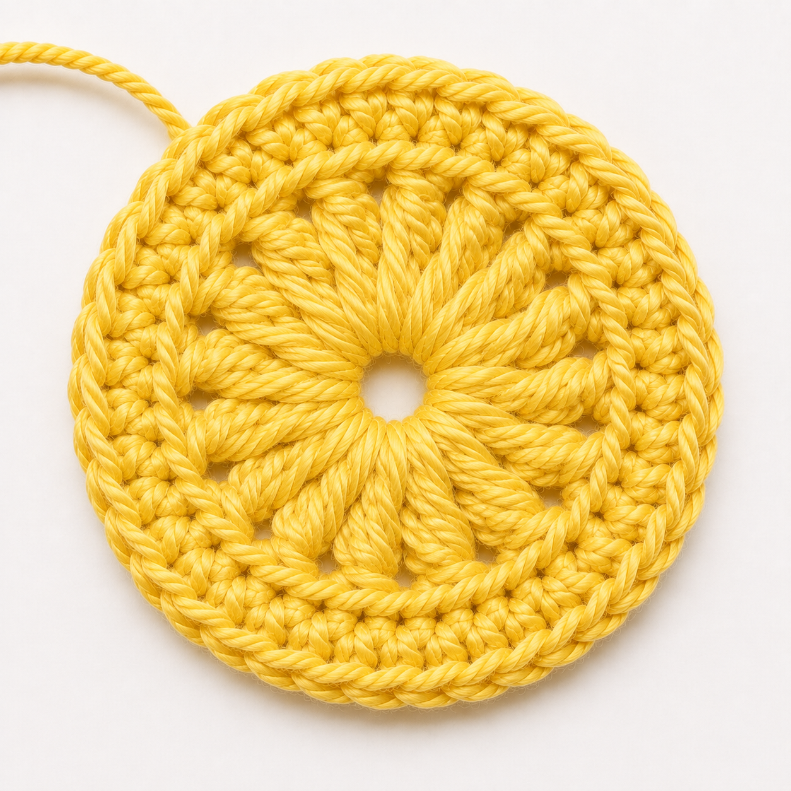

Crochet Granny Square
Estimated Time: 30 Minutes – 1 Hour
Materials Needed
- 5mm Crochet Hook
- Medium Weight Yarn (Any Colour)
- Yarn Needle
- Scissors
- Stitch Marker (Optional)
Abbreviations
- MR = Magic Ring
- ch = Chain
- sc = Single Crochet
- dc = Double Crochet
- sl st = Slip Stitch
- sp = Space
- FO = Fasten Off
Pattern Instructions (Granny Square)

Step 1 (Create the Centre)
Begin with a magic ring (MR).
Chain 3 (counts as the first double crochet), then work 2 double crochet (dc) into the ring.
Chain 2. Repeat the sequence of 3 dc, ch 2 three more times.
Join with a slip stitch to the top of the beginning chain.

Step 2 (Round 2)
Slip stitch into the first corner space.
Chain 3, work 2 dc, ch 2, then 3 dc into the same corner.
Repeat this in each corner around.
Join with a slip stitch.

Step 3 (Round 3)
Work 3 dc into each side space.
In every corner, crochet 3 dc, ch 2, 3 dc.
Continue until all four sides are complete.

Step 4 (Continue Growing)
Repeat the previous round.
Add one 3-dc cluster into every side space and a 3 dc, ch 2, 3 dc cluster into each corner.

Step 5 (Reach Your Desired Size)
Continue crocheting additional rounds until your granny square reaches your preferred size.
You can change yarn colours between rounds for a colourful design.

Step 6 (Finish Off)
Fasten off the yarn.
Use a yarn needle to weave in all loose ends neatly.
Step 7 (Finished Granny Square)
Your granny square is now complete!
Use it as a coaster, bag panel, blanket square, cushion cover, or combine multiple squares into a larger crochet project.